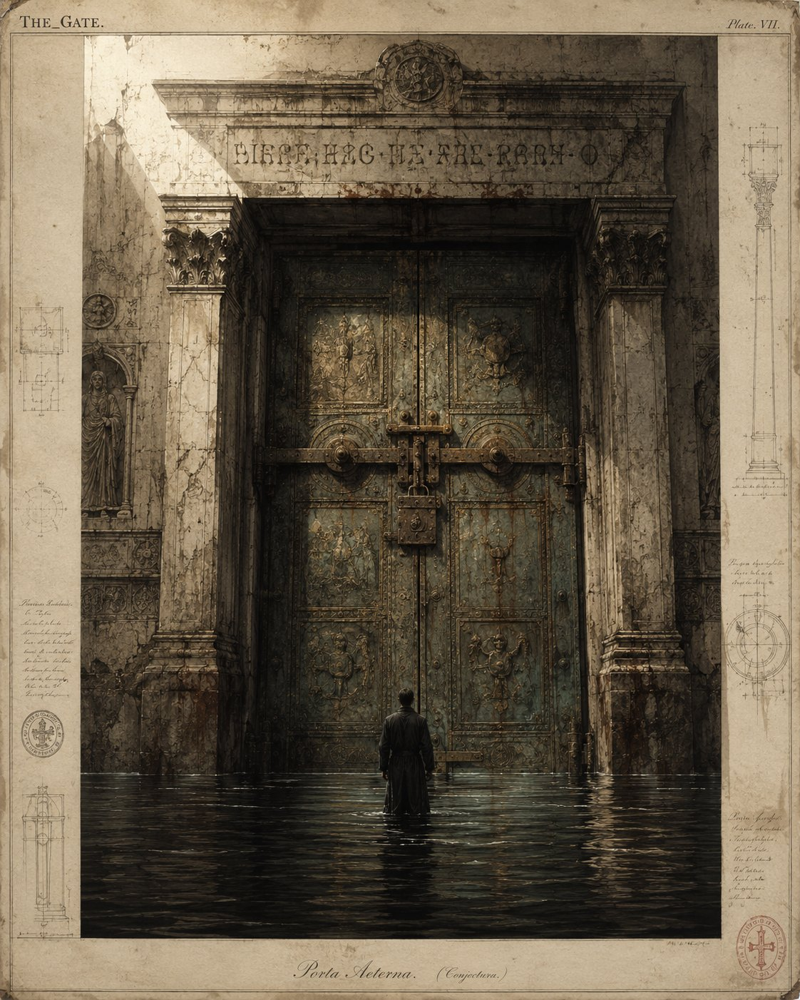
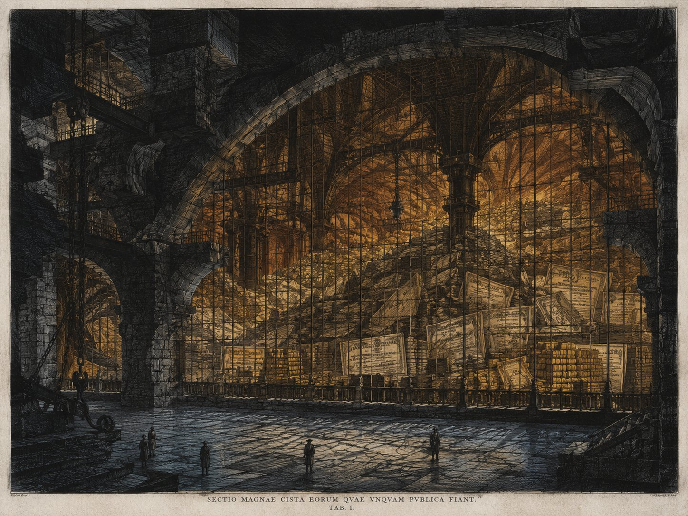

The Flood
& the
Locked Door
·
Jacob E. Thomas, PhD
The Word against the Flood
·
May · 2026
The Threshold
The story of the Millennials is not simply that they were born late. It is that they arrived at the threshold during a civilizational traffic jam.
They were told there would be a passage. Childhood. School. Work. Marriage. Home. Leadership. Stewardship. The old American sequence. The conveyor belt of becoming. The myth of the Republic was not that everyone would be rich, but that each generation would eventually be handed a portion of the wheel. You would labor under your elders, learn the machinery, absorb the rituals, then one day the chair would turn. The meeting would become yours. The house would become yours. The institution would become yours to repair, ruin, redeem, or rebuild.
But Millennials came of age and found the door blocked.
Not by a single villain. Not by every Boomer. That would be too easy, and too false. Many Boomers are not sitting on yachts laughing over reverse mortgages and pension statements. Many are anxious, indebted, medically fragile, still working because the same economy that delayed Millennials also made retirement feel unsafe. But generations can behave like weather systemsWeather SystemA demographic and economic pattern so large that no individual member of it can be blamed for its effects, yet whose aggregate behavior reshapes everything beneath it. Most Boomers did not block the door. The Boomer cohort, in aggregate, did. even when individuals are innocent. And the Boomer weather system has been vast — an enormous demographic high-pressure zone sitting over politics, housing, corporations, culture, and capital for longer than the old lifecycle anticipated.
You don't have to blame your parents. You can love them, and still see this clearly. The thing blocking the door is bigger than any one person who happens to be in its way.
What follows is the geometry of that thing — measured, named, and walked through, one piece at a time.
something very old happened.
The elders did not leave the high ground.
The Vault
Let us begin where the numbers are blunt.
In 2022, Baby Boomer households collectively owned about $77 trillion in wealth — and the top 10% of Boomer households held 71% of that total.1— Source 01 —Pew Research Center, "Are Baby Boomers wealthier than previous generations of older adults?" (Feb 2026), analyzing the Federal Reserve Survey of Consumer Finances 2022.↓ see in marginalia So the story is not "Boomers are rich." The real story is more precise, and more damning: wealth accumulated inside a large generation, but it concentrated heavily at the top — turning the Boomer age cohort into both a demographic fact and a vault.
As of late 2025, Boomers still owned about half of all U.S. household wealth — 51.2% — while Millennials, despite outnumbering them, owned roughly 10.7%.2— Source 02 —Federal Reserve Distributional Financial Accounts, Q4 2025, via Statista: Boomers 51.2%, Millennials 10.7% of total U.S. household wealth.↓ see in marginalia A nearly equal population. A near-five-to-one wealth divergence. The top 10% of Millennials themselves now hold roughly 69% of all Millennial wealth — up from 61% among Boomers at the same age.3— Source 03 —Inequality.org analysis of Federal Reserve Survey of Consumer Finances data: top-10% wealth share at age 30–39 rose from 61% (Boomers) to 69% (Millennials).↓ see in marginalia The inequality machineIntra-Generational InequalityThe often-overlooked fact that wealth concentration is increasing within each generation, not just between them. Millennials are not catching up to Boomers as a class; the top decile of Millennials is catching up — and the bottom half is falling behind faster than ever. did not skip a generation. It only got more efficient.
The Boomer generation is not a wealthy class.
It is a wealthy class wearing a generation as a coat.
This is the first thing the FloodThe FloodThe condition of modern life in which every signal arrives at once and reality becomes ungraspable. The Flood is not too much content. It is the deliberate engineering of attention so that the structural sources of pain — wealth concentration, asset capture, succession failure — are obscured by surface chaos. obscures. It encourages a generational war that looks like Millennial against Boomer when the underlying geometry is much older: top against bottom, asset against income, possession against wage. Most Boomers without a bachelor's degree are not wealthier than the equivalent older Americans were in 2001.1— Source 01 —Pew Research Center, Feb 2026 analysis of the SCF 2022. Education-stratified wealth comparison.↓ see in marginalia Many are poorer. The average Boomer is mostly a story about a few Boomers — and about an economic system that has been very kind to whoever already owned things in 1995.

The ninety percent stand outside the grate.
The Door
Housing is where the vault becomes visible to the eye.
In the first quarter of 2026, the U.S. Census Bureau reported that homeownership was highest among householders age 65 and older, at 78.4% — and lowest among those under 35, at 36.8%.5— Source 05 —U.S. Census Bureau, Quarterly Residential Vacancies and Homeownership, Q1 2026. 78.4% for age 65+, 36.8% for under 35.↓ see in marginalia One cohort aging inside appreciated shelter. Another trying to enter adulthood through the most expensive door in the neighborhood.
Millennials were not merely priced out of houses. They were priced out of tempo. Out of timing. Out of the old rhythm by which a person could become an adult before becoming exhausted.
The median first-time homebuyer in the United States hit 38 years old in 2025 — an all-time record high.6— Source 06 —National Association of Realtors, 2025 Profile of Home Buyers and Sellers; Redfin homeownership analysis, Feb 2026. Median first-time buyer 38 (record). Median repeat buyer: 61.↓ see in marginalia In the early 1980s, that number was 29. A nine-year drift over four decades.
An all-time record. In 1981, it was 29.
And none of this is mysterious. Every lock on this door was forged in a public meeting. Every one of them has a name. Every one of them was defensible — to whoever already held the house.
Each of these locks was made by a policy choice — a zoning law, a loan term, a tax break, a vote at city council. None of them fell from the sky. The door is locked because we keep locking it.
The house appreciates.
The appreciation prices out the heir.
The heir cannot save.
The heir cannot vote out the zoning.
The zoning preserves the appreciation.
The appreciated house cannot be sold without loss.
The unsold house traps the elder.
The trapped elder works past retirement.
The work past retirement holds the seat.
The held seat blocks the heir.
The blocked heir rents.
The rent funds the appreciation.
— and so the spiral feeds itself.
The Tempo
But spirals have human casualties. They have names. And the body keeps the most honest accounts.
Millennials entered work after 9/11. They matured through the Great Recession. They clawed toward stability through student debt and housing inflation, then reached prime family-building years as the pandemic shattered childcare, work, health, schooling, and trust. Then came inflation. Then came interest rates. Then came AI, promising liberation while threatening every white-collar ladder they had finally begun to climb.
Three hundred-year storms in twenty years. The actuarial improbability alone should have been a national emergency. Instead it became a personality: the burned-out Millennial, the anxious Millennial, the brunch Millennial, the killing-industries Millennial. The cultural commentariat was generous with diagnoses and miserly with rooms.
The Flood kept saying: adapt.
So they adapted. They learned new tools. They built digital economies. They became fluent in platforms that did not exist when they were children. They managed remote work, gig work, side hustles, layoffs, Zoom funerals, childcare spreadsheets, therapy language, Slack channels, debt refinancing, and algorithmic job applications. They became perhaps the most adaptive generation in modern American history.
But adaptation is not actualization.
A fish adapts to polluted water.
That does not mean it has inherited the river.
Actualization requires room. It requires institutional oxygen. It requires chairs to open, homes to become available, capital to circulate, authority to move, and elders to distinguish stewardshipStewardshipThe disposition that says: I held this so it could live beyond me. Wealth, authority, and institutions are received in trust and passed on intact. Stewardship is what generations were supposed to do for each other. from possessionPossessionThe disposition that says: I held this, therefore it is mine until the last possible moment. Possession is the operating logic of the eighty-year-old senator, the seventy-five-year-old board chair, the parent who plans the estate around their own comfort rather than the next generation's startup..
Let me interrupt this Codex with a disclosure. I am not commentating on this from a perch.
I was in the rooms. In the clinics. In the hospital. In the labs. Through every wave of this.
I trained in clinical psychology at Columbia and earned my PhD in behavioral epidemiology at UT Austin. Fifteen years inside the science. I have published twenty-five peer-reviewed papers on the epidemiology of depression and substance use — over three hundred citations between them. I have looked at the death certificates. I have looked at the survey instruments. I have looked at the interview transcripts. I know what the curves look like when a generation breaks.
And I am telling you, as a scientist and as a witness: this is not a moral panic. It is not Instagram. It is not phones. Those things matter, but they are downstream. The deep signature is the body responding correctly to a hostile environment.
When you cannot afford rent, cannot afford children, cannot afford care, cannot afford rest — the body files a complaint. The complaint is depression. The complaint is anxiety. The complaint, sometimes, is death.
This is not weakness. This is the body keeping accurate accounts.

The body keeping accurate accounts, drawn at scale.
And the body's books are unambiguous. Between 2007 and 2017, the suicide rate among Millennials rose 35% — compared with 14% for Generation X over the same window.8— Source 08 —Sunshine Behavioral Health summary of 2020 generational analyses: Millennial suicide rate +35% (2007–2017); +14% for Gen X; major-depression diagnoses +43% since 2014. Schnittker (2025), Sociology of Mental Health.↓ see in marginalia Major depression diagnoses among Millennials rose 43% from 2014 forward. Deaths of despairDeaths of DespairA term from economists Case and Deaton for deaths from suicide, drugs, and alcohol — outcomes that share an underlying signature of social and economic loss. The pattern concentrates where wage stagnation, housing instability, and isolation overlap. — suicide, drug overdose, alcohol-related liver disease — concentrated heaviest in the demographic cells where the housing gap, wage stagnation, and student debt overlapped.
The mental-health crisis and the locked-door crisis are not two stories. They are the same story told in two registers: one in dollars, one in serotonin.
By 2024, nearly 1 in 4 American adults had experienced a diagnosable mental-health condition in the past year — and almost half of them received no treatment.9— Source 09 —SAMHSA National Survey on Drug Use and Health, 2024 release (July 2025); CDC Mental Health Conditions and Care data, Jan 2026 update. ~23.4% of adults experienced a MH condition in past year; nearly half untreated.↓ see in marginalia The numbers have held at historic highs for four consecutive years. There is no longer such a thing as an "epidemic of anxiety." There is a steady state.
They have become the climate.
The Held Throne
If the body is one ledger, the institution is the other. And the institutional ledger reads the same.
At the start of the 119th Congress, the median age of voting House members was 57.5 — and the Senate's median was 64.7. Generation X had finally overtaken Boomers in the House. But Boomers still held 60 of 99 Senate seats. Millennials held five.10— Source 10 —Pew Research Center, "Age and generation in the 119th Congress" (Jan 2025); Ballotpedia Feb 2026 analysis. Oldest senator: Grassley (R-IA), 91. Youngest: Ossoff (D-GA), 37.↓ see in marginalia The upper chamber of the Republic still looked less like the future arriving than the past extending its lease.
Corporate governance tells a similar story in quieter language. In 2025, S&P 500 boards appointed just 374 new independent directors — the lowest number since 2016. Only half of all S&P 500 boards appointed even one new independent director that year. Average board turnover: 0.8 new directors. The average age of new directors was 59.1; sitting independent directors averaged 63.6.11— Source 11 —Spencer Stuart, 2025 U.S. Board Index (40th edition, October 2025), via Harvard Law CorpGov Forum.↓ see in marginalia
![A wide-angle engraving of an ornate U.S. Senate-style chamber. Rows of seated figures fill the desks on the left, faces hidden in shadow, each lit only by their own brass reading lamp. Along the right wall, broad shafts of daylight fall through tall clerestory windows onto a row of empty committee chairs, each labeled with a brass plate: 'COMMERCE,' 'FOREIGN RELATIONS,' 'FINANCE,' 'MILITARY AFFAIRS,' 'NAVAL AFFAIRS,' 'INDIAN LANDS,' 'PUBLIC AFFAIRS.' The light reaches the chairs, but no one sits in them.](./The_Held_Throne.webp)
The light reaches the empty chairs. No one sits in them.
Even refreshment arrived gray at the temples.
Work itself no longer clears the upper floors. The old assumption was that retirement would create space. But the Bureau of Labor Statistics reported that in 2024, 19.5% of people age 65 and older were in the labor force — almost double the 1985 low of 10.8%.12— Source 12 —U.S. Bureau of Labor Statistics, "Golden Years: Older Americans at Work and Play" (2025); 1985 low of 10.8%, 2024 figure of 19.5% for 65+ labor force participation.↓ see in marginalia
Now follow the curve down. Watch the postwar middle class build itself: pensions, employer health insurance, retirement at 62 or 65. By 1985 the curve has bottomed at 10.8%. That was the deal: you labored, you saved, you retired, you rested. You moved out of the chair so the next person could sit.
Then the deal expired. Pensions converted to 401(k)s — the risk moved from the company to the worker. Healthcare costs unmoored from wages. Housing costs unmoored from incomes. Watch the curve climb back up. By 2024, 19.5% of older Americans were still working. Some because they want to. Many because they have to.
This is the chart of the locked door. Every percentage point above 1985 is a chair that did not open.
For Millennials, this means that the executive offices, board seats, deanships, judgeships, partnerships, and senior accounts they were once promised on a forty-year clock are now operating on a sixty-year clock — and the seats that do open are increasingly going laterally to older Gen Xers, leaving Millennials in the awkward position of being too senior to be junior and too young to be elder.
You are no longer young, but you are still treated as incoming.
You are experienced, but not yet the elder.
You are responsible, but not sovereign.
The Boomer cannot afford to retire.
The Boomer holds the seat.
The seat does not open.
The successor does not earn the seat.
The successor cannot afford to save.
The successor cannot afford to wait.
The successor cannot afford to retire.
— the wheel becomes a ratchet.
The Flood
If the ratchet is the institutional shape of the bottleneck, the Flood is its informational shape.
The Flood was never just "too much content." It was never merely too many posts, too many notifications, too many outrages. The Flood is the condition in which reality itself becomes ungraspable because every signal arrives at once, every crisis competes with every other crisis, and every person is made to tread water inside systems too large to see. It is the storm surge of modernity: data, debt, media, markets, credentials, algorithms, rents, rates, apps, alerts, vibes, narratives, dashboards, and doom.
Another interruption. Another disclosure.
I have spent the last five years behind the job board. Not commentating from a perch — building. I run a lab that tracks job-seeker behavior across thirteen national markets. I have looked at hundreds of millions of clicks. I have built the semantic-matching systems that try to translate human ambition into something an employer's filter can read. I am inside the AI age — not watching it, building inside it.
And I am telling you, plainly: the labor market is a Flood. Not metaphorically. Operationally.
The signal-to-noise ratio in modern job listings has collapsed. The titles do not mean what they used to mean. "Manager" can mean a person leading thirty people or a person leading no one and a spreadsheet. "Senior" can mean fifteen years of expertise or fifteen months of survivorship after a layoff round. The salaries do not anchor to ladders anymore. The ladders themselves are missing rungs.
And when the CEOs of the AI companies say half of entry-level white-collar jobs will be gone in five years, they are not posturing. They are reading their own quarterly board materials and translating them into the public register. Pay attention to what they would not say carelessly.
More titles than ever describe fewer real ladders than ever. The medium has become so noisy that the message — what role this is, what it pays, what it leads to — has thinned to a whisper. This is signal inflationSignal InflationThe phenomenon in which job titles, credentials, and role descriptions become noisier and less informative even as the underlying labor market grows more competitive. Coined and operationalized in the LAMP Lab analysis of cross-market click and listing data.. The Flood is not only on the user's phone. It is on the employer's posting.
Then came the new layer.
Yale economists started calling it the big freeze: companies are not firing, but they are not hiring either. Employment looks stable. Opportunity does not. The first rungs of the career ladder are not being removed in a catastrophic event; they are being quietly unscrewed, one role at a time.
For Millennials and the older edge of Gen Z, this is the third great structural blow inside a single working life — after the Great Recession and the pandemic. And the youngest among them are now hearing, with eerie consistency from CEOs who would not say this carelessly, that the entry-level job their older brother climbed out of college and into the middle class with is going to be done by software.
The Boomers inherited postwar expansion
and converted much of it into property.
Millennials inherited the Flood
and were told to optimize their personal brands.
The Mirage
When you cannot give a generation a present, you offer them an inheritance.
This is why the so-called Great Wealth Transfer feels less like salvation than another Flood narrative. Cerulli projects that wealth transferred through 2048 will total $124 trillion — $105 trillion to heirs, $18 trillion to charity. Nearly $100 trillion from Boomers and older generations. Millennials projected to inherit the most over the full 25 years: about $46 trillion. Gen X more in the nearer term.16— Source 16 —Cerulli Associates, "The Great Wealth Transfer: Capturing Money in Motion," U.S. High-Net-Worth and Ultra-High-Net-Worth Markets reports, Dec 2024 and June 2025 updates. $124T total through 2048; $62T from wealthiest 2%; $54T spousal transfers; $40T to widowed women; Millennials $46T / Gen X $39T over 25 years. The phrase "a massive need, and opportunity" is quoted verbatim from Cerulli's press release.↓ see in marginalia
On paper, that sounds like the doors finally opening. The largest nominal transfer of wealth in recorded history. The delayed inheritance. The great generational correction.
But the Flood always hides distribution inside volume.
A trillion-dollar wave can still miss most boats.
An Elegy for the Widows
and the Children Who Will Open the Envelope
The men die first. They almost always do. That part is not the betrayal. That part is biology.
The betrayal is what happens next.
When a Boomer husband dies — and the actuarial tables say it will be the husband, by an average of years — the money does not go straight to the children. It cannot. It goes first to his widow. $40 trillion of the entire Great Wealth Transfer, moving sideways into the hands of women who are, on the day they inherit, the most vulnerable they have ever been in their adult lives.
She is in her seventies. Her children are scattered across time zones. Her husband, who handled the money — who knew the brokers, knew the lawyer, knew the password to the brokerage account — is gone. The house is too quiet. The mail is full of envelopes she does not understand.
And the wealth management industry has been preparing for her for decades.
They have specialized teams. They have grief-trained outreach. They have software that flags the obituaries. They have advisors — many of them men who knew her husband — who know exactly when to call, exactly what to say, exactly how to look concerned. They have insurance products structured to maximize their commissions and lock up her liquidity. They have estate vehicles that ensure her late-life care will be funded — by quietly selling whatever else might have been left for her children. They have, in their own words, prepared for "a massive need, and opportunity."
That phrase is not mine. That phrase is from the industry's own press release. She is the opportunity. Her grief is the entry point.
She trusts the men in suits who knew her husband. Of course she does. They tell her there is so much to manage. They tell her not to worry. They tell her this is what he would have wanted. They smile when they say it.
Twenty years pass. She declines. She moves to a facility. The brokerage statements get fatter on the way to the firm and thinner on the way to her children. The lake house is quietly sold to fund the next level of care. The trust is amended in ways no one can quite explain. The advisor who started with her is replaced by his son, working at the same firm, recommending the same products at slightly higher fees.
And then she dies. And the children fly in to clean out the house. And they open the envelope they had been told, for thirty years, would contain something.
And it contains a fragment.
A fragment of what the spreadsheets once said. A fragment of what their father, on his good days, used to promise. A fragment that has been chewed through by management fees, late-life premiums, restructured annuities, "estate planning services" that benefited the planner more than the family, and a hundred other small extractions made on a woman who could no longer audit them.
The children do not weep because the money is gone. They were taught not to expect it.
They weep because the system did not just delay their inheritance. It ate their mother.

and steal from the children
after the Boomer men die.
Because that is what it has
always done.
And because wealth is already concentrated, inheritance will often intensify inequality rather than heal it. The children of asset owners will become asset owners. The children of renters will inherit memory, photographs, recipes, maybe a ring, maybe a debt, maybe nothing at all.
That is the terrible possibility: the greatest wealth transfer in history may also become one of the greatest inequality-preservation machinesInequality-Preservation MachineA system that appears to redistribute wealth — through inheritance, philanthropy, advisor relationships, public-private partnerships — but in fact concentrates it further, by moving assets within the already-wealthy 2% of households while making the redistribution legible enough to defuse political pressure for actual reform. in history.
The Flood will call it liquidity. The market will call it estate planning. The banks will call it advisory opportunity. The consultants will call it transition. But at the human level it will be more elemental.
So the Millennial wound is not envy. It is metaphysical delayMetaphysical DelayThe repeated postponement of agency. The sense that every institution says "not yet," even as your hair grays, your children grow, your parents decline, and the future you were preparing for becomes the present you are still not allowed to govern. A generation can survive any single delay. The wound is the pattern..
A generation can survive delayed homeownership. It can survive late marriage. It can survive student debt, recessions, inflation, pandemics, and bad jokes about brunch. What is harder to survive is the repeated postponement of agency.
You are asked to stabilize systems you did not design, fund retirements you may not enjoy, respect institutions that did not make room for you, and show gratitude for opportunities that arrive twenty years late and priced at seven percent interest.
The Flood is not a metaphor.
It is a design.
The platform captures the attention.
The attention trains the model.
The model eliminates the entry-level job.
The displaced worker becomes the user.
The user funds the next platform.
The next platform captures the attention.
The Flood is a design.
And every system you have been told is broken
is working exactly as someone intended.
— but not most of us. And not for long.
The Ark
Every flood story contains an ark.
The ark is not resentment. Resentment is just more floodwater. The ark is succession with moral memorySuccession with Moral MemoryThe act of passing on a chair, a house, a fund, a name, or an institution while remembering that you received it under conditions you did not earn, and that the next generation deserves the same generosity. The opposite of dynasty..
It is building institutions where chairs turn over before they become thrones. It is designing companies with apprentices who actually inherit authority. It is zoning enough homes for people who are not already rich. It is political leadership that treats age as wisdom only when paired with relinquishment. It is family wealth handled as covenant rather than dynastic hoarding. It is refusing to confuse I earned this with no one else should ever get a turn.
The ark is also narrative. Millennials need to stop accepting the story that their delayed actualization was a personal failure. It was structural. It was historical. It was demographic. It was policy. It was asset inflation. It was institutional stagnation. It was a generational bottleneck disguised as meritocracy.
And the ark is, finally, made of small things. Real things. Local things. The Flood is too vast to fight at scale. The only effective response is to build, at human size, the institutions you can actually steward.
In What Holds, my long-running book project — written with a man who has spent forty years inside the family therapy room — we name five of them. Five pillars. Five practices that have been recovered from older traditions and translated for life inside the Flood. They are the manifest of the ark.
![A horizontal frieze of five gothic arches in the style of an illuminated medieval manuscript. From left to right: (1) DAWN — a hooded figure walking before sunrise with a lantern over open country; (2) TABLE — many hands reaching toward a candle, a loaf of bread, and shared bowls on a wooden table; (3) SABBATH — an empty rocking chair on a porch with a closed book on its seat, looking out toward distant hills; (4) COUNCIL — three robed figures seated together at night around a small lantern, in conversation; (5) MAST — a weathered wooden mast on a windswept hill, holding firm under a storm-sky. Borders of laurel leaves and gilded fleurs-de-lys. At the bottom center, a green seal bearing a single olive branch.](./The_Ark.webp)
Dawn · Table · Sabbath · Council · Mast.
And one more thing, which has no pillar because it is the reason for all of them: a child you walk with into the gray-blue cold, every morning, while the rest of the country is still scrolling.
The Flood's first victory is convincing you that nothing small matters. That if you are not building at the scale of the platform, you are not building. That is the lie. The Word against the Flood is a real practice, and it begins with the refusal to be talked out of your own life.
will become extraction's final joke
or stewardship's late repentance.
The coming transfer, however unequal, is still a hinge. A civilization can use a hinge to open a door or to crush fingers. The wealth moving over the next quarter-century could harden America into hereditary tiers, where opportunity depends even more brutally on whether your parents bought a house in the right decade. Or it could seed new institutions: family foundations, local businesses, housing support, educational repair, community infrastructure, tools against the Flood.
The Millennials are not waiting to be young anymore.
That time is gone.
They are waiting to be entrusted.
The Prayer
If there is a prayer inside all this, it is not "give us what they had." It is better than that.
medical residue and probate paperwork.
Because the Flood is rising. The lights are blinking. The feeds are screaming. The old maps are dissolving in our hands.
And somewhere in the noise, a generation that was told to wait is finally asking the only question that matters:
When does stewardship become surrender?
And when, at last, do we get to build?
Primary sources: Pew Research · U.S. Census Bureau Q1 2026 Federal Reserve SCF 2022 · BLS · Spencer Stuart 2025 Cerulli Associates June 2025 · SAMHSA NSDUH 2024 Anthropic / Axios May 2025 · Yale Insights 2026
The Spiral continues
Marginalia · Sources
- Pew Research Center, "Are Baby Boomers wealthier than previous generations of older adults?" (Feb 2026), analyzing Federal Reserve Survey of Consumer Finances 2022. $77T Boomer wealth; top 10% holds 71%.
- Federal Reserve Distributional Financial Accounts, via Statista, Q4 2025: Boomers 51.2%, Millennials 10.7% of total U.S. household wealth.
- Inequality.org analysis of SCF data: top-10% wealth share at age 30–39 rose from 61% (Boomers) to 69% (Millennials).
- Visual Capitalist / Self.inc analysis of Federal Reserve Q4 2022 asset data: Boomers hold 56% of equities/mutual funds, 49% of real estate by value; Millennials hold 2% of equities. Consumer credit share from Self.inc 2024.
- U.S. Census Bureau, Quarterly Residential Vacancies and Homeownership, Q1 2026: 78.4% for age 65+, 36.8% for under 35.
- National Association of Realtors, 2025 Profile of Home Buyers and Sellers; Redfin homeownership analysis, Feb 2026: median first-time buyer 38 (record); median repeat buyer 61.
- Urban Institute / Wealthvieu analyses (2025–2026): ~$37K avg federal student-loan balance; 4–7 year homeownership delay; 4–7M unit housing shortage; spring 2024 mortgage payment ≈ $2,800/mo (Redfin).
- Sunshine Behavioral Health summary of 2020 generational analyses: Millennial suicide rate +35% (2007–2017) vs. +14% for Gen X; major-depression diagnoses +43% since 2014. Schnittker (2025), Sociology of Mental Health.
- SAMHSA National Survey on Drug Use and Health, 2024 release (July 2025); CDC Mental Health Conditions and Care data, Jan 2026 update.
- Pew Research Center, "Age and generation in the 119th Congress" (Jan 2025); Ballotpedia analysis, Feb 2026.
- Spencer Stuart, 2025 U.S. Board Index (40th edition, October 2025), via Harvard Law CorpGov Forum.
- U.S. Bureau of Labor Statistics, "Golden Years: Older Americans at Work and Play" (2025); 1985 low of 10.8% and 2024 figure of 19.5% for 65+ labor force participation.
- Dario Amodei interview with Axios, "Top AI CEO foresees white-collar bloodbath" (May 28, 2025).
- Fast Company, April 2026 unemployment update; finalroundai.com 2025 layoff analysis; NY Fed April 2025 graduate-unemployment data.
- Jeffrey Sonnenfeld et al., Yale Insights / Fortune commentary (May 2026): Goldman Sachs ~16K AI-attributable jobs/month; Schulman and BCG forecasts; "the big freeze." Block layoffs reported by CNBC, Feb 2026.
- Cerulli Associates, "The Great Wealth Transfer: Capturing Money in Motion," U.S. High-Net-Worth and Ultra-High-Net-Worth Markets reports, December 2024 and June 2025 updates: $124T total transfer through 2048; $62T from wealthiest 2%; $54T spousal transfers; $40T to widowed women; Millennials $46T / Gen X $39T over 25 years. The phrase "a massive need, and opportunity" is quoted from Cerulli's press release.
and not require your waiting